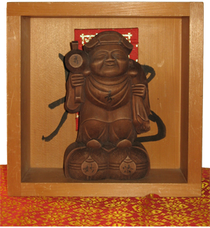

Below is a lecture given by Kanai Shonin about Daikoku-sama. Other lectures may be found on the sermon page.
DEITY DAIKOKU
(Jan. 28, 1996)
This morning, we had a special service called Festival of Deity Daikoku. We had the opening-eyes ceremony for new statues of Deity Daikoku and blessing the power of the deity. Daikoku-sama is very similar to Santa Clause. I would like to compare the two of them for your better understanding of the Deity Daikoku.
Daikoku-sama will bring you good fortune, wealth, prosperity, long life, and happiness. Santa Clause is coming only once on Christmas Day, while Daikoku-sama is coming six times in a year which is every 60 days. Today is the first appearance of Daikoku in this year. He carries a big bag on his back just like Santa Clause. Santa's bag is full of toys and other presents for children, but Daikoku's bag is full of money and food -- especially rice. When his bag becomes empty, he strikes his magic mallet with his right hand, then it is said that whatever his believers want, it will be materialized. Daikoku-sama is worshipped by adults especially merchants, store owners, and house-holders.
Because Daikoku-sama produces rice which is a main dish for Asian people, his statue is placed in a respectable place in the kitchen. Until many decades ago, food was cooked with fire of wood or coal that made a lot of black smoke.
Therefore Daikoku-sama becomes black with kitchen smoke compared with the red-coat of Santa Clause. Santa Clause is an old man just like Daikoku. The old man of Daikoku- sama promises long life for the worshippers. Santa has white hair, mustache, and beard, while Daikoku has no mustache nor beard. He wears flat hat not like a Santa's cone- shaped hat. His smiling face represents happiness, his short and round body means satisfaction and harmony. His feet rest on the top of two straw rice-bags which symbolizes his power to control rice and other grains.
A statue of Daikoku-sama is placed in a square wood rice measure. This is because Daikoku-sama represents the plus or a male while the measure represents a minus or a female. When plus and minus meet, something new will be produced.
This symbolizes harmony, happiness and new production. In our daily lives, we must always try to harmonize with spouse, members of the family, neighbors, and also with nature. Our mind and body must be harmonized, too; then we will keep good health and happiness. Please believe in this harmony, and chant the Odaimoku. Then, Odaimoku will produce rice, money, health, and long life for you. It is always the Odaimoku that is the important thing.